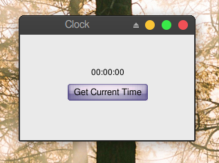
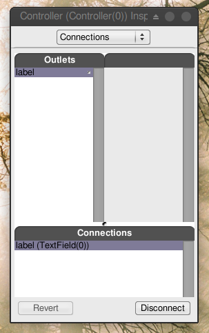
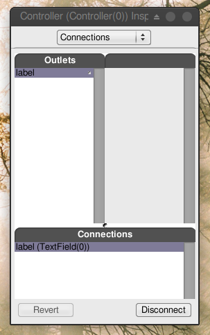

3.1 - A Basic Clock#
In this section, you’ll create an application that shows the time and a button to update it.

This teaches you to make an interface, use outlets and actions, and use the View-Controller paradigm (this app is simple enough that it doesn’t need a Model). Most of this you should have already learned in Tutorial #2 (Currency Convertor), but this will be a refresher and a base for you to get started on the next section.
This tutorial does not use ProjectCenter, so please create a folder to work in before starting. I would recommend:
mkdir -p ~/Projects/GNUstep/GSTutorial/3.1_TimeMachine
cd ~/Projects/GNUstep/GSTutorial/3.1_TimeMachine
but of course, you can put your folder wherever you like.
Before you begin, please also choose which text editor you would like to use. If you can’t decide, you can try VSCodium, which was used to create this documentation website.
Making the interface#
Open Gorm, choose “Document→New Application”, and build a window with a title and a button.

The interface#
You can set the title of the button and the window in the inspector.
Renaming the window#
That’s all you need to do on the interface.
A class#
Now, I need an “controller” to receive the action from the “view”, and display the time on the “view”. I need to create a object for this “controller”.
First, I need to design the class of this “controller”. Click the
Classes tab in the main window of Gorm. If it doesn’t show like below, click the  button to change it to below.
button to change it to below.

Classes tab in Gorm#
It will show all the classes you can use. I want the class of this
“controller” to inherit from NSObject. Therefore, choose NSObject,
then select the menu “Classes→Create Subclass…”, or select the “Create Subclass…” option in the “Operations” dropdown to the right. It will create a
new subclass of NSObject called NewClass.
After creating a new class#
Double-click on it to change the name to Controller.

Renaming the class to Controller#
Making Outlets and Actions#
Then I need a “outlet” in this class to connect to the label in the window, and an “action” which is triggered when the button is press.
Choose the Controller class and click Outlets tab in the inspector.
Press the button, and change the name to label by double-clicking
the newOutlet. You will notice that the Controller class now has one
outlet. Click on the small round button will list the outlets it has.

Adding an outlet named label#
Now, click the Actions tab and add a new action called showCurrentTime:.
You should notice that the action name ends with a colon (:),
which will be explained later.
Adding an action named showCurrentTime:#
Connecting Outlets and Actions#
Once you finish designing this class, you can create an instance from it.
Choose the class Controller, then select the menu item “Classes→Instantiate”, or select the “Instantiate” option in the “Operations” dropdown to the right. Look at the objects of Gorm main window. You
should find a new instance, called Controller. That’s the instance I
want to connect to the interface.
Now, let’s connect the “controller” to the “view” for the outlet. Hold
on Control, select the Controller instance, drag to the label in the
window. Look at the inspector, which will show all the outlet the
Controller instance has. Select the only one – label, and click the
button. That’s it.
 

Again, let’s connect the “view” to the “controller” for the action.
Hold on Control, select the button in the window,
and drag to the Controller instance. Look at the inspector,
which will show all the outlets the button has.
Select target in the Outlets column, then select the
only action the target has, showCurrentTime. Click the “
button. That’s it.
Figure 4-11. Connect action


Writing the Code#
Finally, you need to create the files for this Controller class in order
to add the the source code. Otherwise, this class does not function at
all. Select the class Controller (not the instance!) in the Gorm
main window. Choose the menu item “Classes→Create Class Files”, or select the “Create Class Files” option in the “Operations” dropdown to the right. A Save
panel will show up and ask the for the filename.
The default is Controller.m, which is good enough. Click .
Save this Gorm file as TimeMachine.gorm, then leave Gorm.
Now, I have a directory, TimeMachine.gorm, and two files,
Controller.h and Controller.m. TimeMachine.gorm is a bundle, which means that some file managers treat it like a file.
Open your favorite code editor, and you should be able to see the files below.
Controller.h:
/* All rights reserved */
#include <AppKit/AppKit.h>
@interface Controller : NSObject
{
id label;
}
- (void) showCurrentTime: (id)sender;
@end
Controller.m:
/* All rights reserved */
#include <AppKit/AppKit.h>
#include "Controller.h"
@implementation Controller
- (void) showCurrentTime: (id)sender
{
/* insert your code here */
}
@end
That’s the source code of the class Controller you just created in Gorm.
The method -showCurrentTime: has the argument sender. That’s the reason
the action name in Gorm must have the colon (:) in the end. In
Controller.h, you can find the outlet label (as an instance variable) and the action
showCurrentTime:. Therefore, whatever you do on the outlet label
will reflect to the label variable, and when the button
is pressed, the action -showCurrentTime: will be called.
That’s how outlets and actions work.
Now, you can put some source code in this class.
Controller.m:
#import <AppKit/AppKit.h>
#import "Controller.h"
@implementation Controller
- (void) showCurrentTime: (id)sender {
NSCalendarDate* date = [NSCalendarDate date];
[date setCalendarFormat: @"%H:%M:%S"];
[self->label setStringValue: [date description]];
}
@end
First, [NSCalendarDate date] will create an instance with the current
date and time. After setting the format, we put the description of current
time into the outlet label. When users click the
button, it will show the current time.
Technically, self->label is not good style, but it’s way easier to understand that way, rather than just doing label. And if you created the method implementation yourself, as a function, you have to write self->label.
That’s it. Add the main.m and GNUmakefile, then it is ready to go.
main.m:
#import <AppKit/AppKit.h>
int main(int argc, const char *argv[]) {
return NSApplicationMain(argc, argv);
}
This is just the main function for any AppKit application.
In this example, the owner of the interface is NSApp, which is the
NSOwner in Gorm, but the controller is the Controller instance.
Sometimes, the owner and the controller could be the same. In simple
applications, the owner/controller of the window can also be the delegate
of NSApp. That’s all depending on the design of your application.
Building our app#
GNUmakefile:
include $(GNUSTEP_MAKEFILES)/common.make
APP_NAME = TimeMachine
TimeMachine_HEADERS = Controller.h
TimeMachine_OBJC_FILES = main.m Controller.m
TimeMachine_RESOURCE_FILES = TimeMachineInfo.plist TimeMachine.gorm
TimeMachine_MAIN_MODEL_FILE = TimeMachine.gorm
include $(GNUSTEP_MAKEFILES)/application.make
The GNUmakefile tells the build system, GNUstep Make, how to build the app. ProjectCenter makes one for you, but it’s pretty easy to make one yourself (It’s not easy to make an Xcode project without Xcode!).
To build the app, you can type in the terminal:
make
or
gmake
depending on your operating system. You must use GNU make, not BSD make, POSIX make, or another make system.
In VSCodium, to open the terminal, use “Terminal→New Terminal”.
To run the app, just type in the terminal:
openapp ./TimeMachine.app
Our finished app#